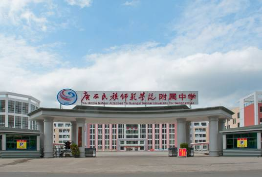
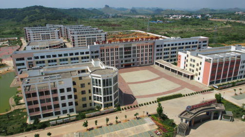

CHONGZUO · GUANGXI
01 GXMSNU AFFILIATED HIGH SCHOOL
成就每一位学生的
美好未来
广西民族师范学院附属中学 · 广西示范性普通高中
崇左市人民政府投资兴建，高起点、高标准的现代化公办学校
DEMONSTRATIVE HIGH SCHOOL OF GUANGXI

02 / BY THE NUMBERS● 数字看附中
0亩 · 校园占地
0平方米 · 校舍面积
0间 · 标准教室
0亿元 · 总投资
03 CAMPUS & FACILITIES
办学条件
教育教学设备齐全、设施一流，
学校建设第一期工程已基本完成并投入使用。
- A教学楼1 栋 · 100 间教室
- B实验楼 / 办公楼 / 科技楼各 1 栋
- C学生宿舍楼8 栋
- D学生食堂2 栋
- E体育馆1 栋
- F运动场地400 米塑胶跑道 · 足篮排乒齐全
04 FACULTY
师资队伍
致力于打造一支师德高尚、教育教学水平高的教师队伍。
RECRUIT / 招聘
面向全国、全区公开招聘优秀教师，引进北师大、华东师大、华中师大等著名师范院校本科以上学历毕业生，并招聘经验丰富的在职中学教师。
TRAIN / 培养
邀请全国、全区知名教育专家对全校教师进行全员培训，分批次派教师到全国、全区名校轮训学习，锐意探讨教学改革。
PARTNER / 合作
与名校建立帮扶关系，借鉴名校成功经验，高起点打造先进课堂教学模式。
05 PHILOSOPHY
办学理念
“成就每一位学生的美好未来。”
- 办学目标
- 为全国名校输送优质生源 · 创建广西一流学校
- 办学宗旨
- 以学生为本
- 育人方式
- 德、智、体、美和谐全面发展
- 特色办学
- 小班化办学 · 学习困难学生辅导机制 · 生活困难学生帮助机制
06 HONORS & RESULTS
荣誉与成果
卓著的办学成果，得到社会各界的广泛赞誉。
- 2020.12入选 2019-2020 年节约型公共机构示范单位名单
- 2021.11被教育部办公厅认定为第三批全国中小学中华优秀传统文化传承学校
- 2025.05入选第三届全国文明校园名单
0人 · 学科竞赛全国一等奖
0人 · 学科竞赛全国二等奖
0人 · 学科竞赛广西一等奖
- ●教师：广西优质课比赛第 4 名；市级教学比赛第一名 10 人次；区、市级二等奖 16 人次。
- ●高中部：每次月考各科成绩均为崇左市第一，尖子生比例崇左市第一。
- ●初中部：段考、期考成绩拔尖，稳居崇左市前列。
